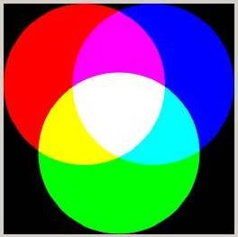
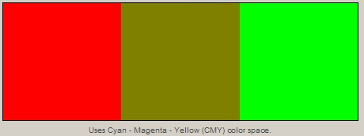
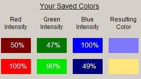
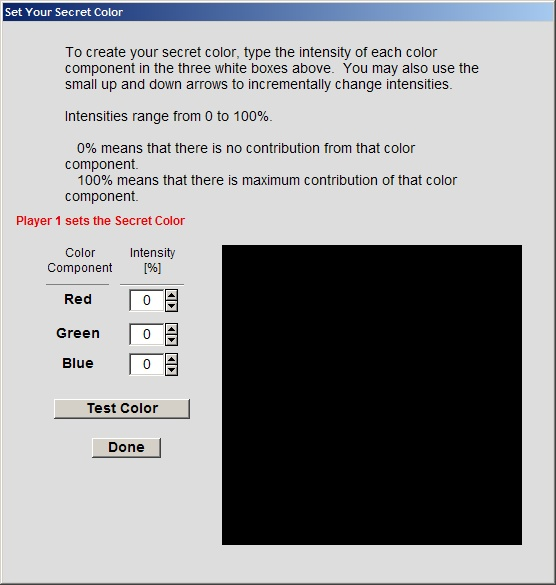
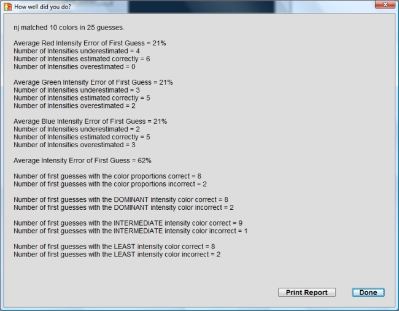
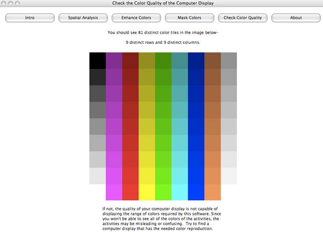
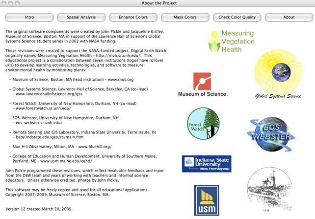

ColorBasics is a free program that introduces the ideas behind the composition of color in digital images and is designed for educational use on either PCs or Macs. The latest version of the software may be downloaded here. The software provides a variety of interactive tools to investigate colors composed in various color spaces.
Eight tab panels provide access to a variety of color investigation tools in this program: Intro (Introduction), Compare Colors, Make Colors, Play with Colors, Test Yourself, Color Spaces, Check Display's Color, and About. The Introduction panel provides a brief explanation of how colors are composed. Compare Colors allows you to compare the result of mixing two different colors as both pigments and as light. The input values for three different color spaces can be adjusted in Make Colors to see how colors are composed in each space. Play with Colors contains a color guessing game, playable with either another player or with a computer randomly selecting a color. Test Yourself allows users to check their accuracy at determining colors by eye. The three most commonly used color spaces are explained in detail in Color Spaces. Check Display's Color provides a visual test of the computer/projector display, and About provides information for about the collaborating seven institutions involved in the Measuring Vegetation Health (aka Digital Earth Watch) project.
The Intro tab panel points out the difference between composing colors as pigment and as light, and indicates which tab panels to explore in order to learn more about colors. A button links directly to the Color Spaces tab for more information about the various spaces used to represent color.

Combinations of two basic, pre-determined colors can be made in the Compare Colors tab panel to see how the result differs between pigment (such as with paint) and light (such as with TV and computer screens). Red, yellow, green, cyan, blue, and magenta may be selected two at a time, with the pigment and light results displayed next to each other simultaneously.
The Make Colors tab panel allows a user to select one of three different color spaces in which to create a color. Once this is selected, the intensities of the color components may be freely adjusted, with the result being displayed in real-time. These colors can be saved in a column along the side to allow for easier comparison of different colors in the same color space. The saved colors can be cleared if there is no more room or if a new set of saved colors is desired.
Two users may play a game together in the Play with Colors tab panel. One user selects a color, and the other must attempt to come as close to it as possible. The level of difficulty indicates the acceptable margin of error, as it is very diffictult to determine exactly the values of any one particular color. The game is also playable against the computer, in which case the computer selects a random color for the user to guess.
The Test Yourself panel can be used to start a test to visually estimate the composition of a color, using a series of randomly generated colors. After adjusting the color intensities and making a guess, the program indicates whether any intensities must be adjusted up or down (intensities within 15% of the target are considered accurate). When ten colors have been correctly determined, a report is displayed evaluating the performance.
The test may be conducted using the RGB, CMY, or HSV color spaces.
The RGB, CMY, and HSV color spaces can be viewed here, represented graphically as cubes. Each color space graph is accompanied by a detailed description of its real-world applications and how the colors are combined.
The Check Color tab panel has a visual test to see if the quality of the computer screen/television/projector has adequate range in color reproduction to provide a meaningful exploration of the digital image activities. The panel displays 81 color tiles of shades of gray, red, green, blue, yellow, magenta, cyan, and brown. If all 81 color tiles are visible, the quality of the display is adequate for the seeing subtle color differences in most images.
The About tab panel describes how the software was developed by the seven collaborating institutions funded by NASA. Move the cursor over an icon to see the address for the website for each institution.
If you don't want to or can't open the help file in your browser, you can view the help as a single PDF file. Note that you will need to have a PDF viewer such as Adobe Reader installed.
View the help files in HTML format in your web browser. The HTML help comes in both a single large file as well as multiple smaller files.
Additionally, menu items exist for accessing specific sections of the help file directly through the browser instead of browsing the table of contents.
If you know what part of the program you need help with, you can directly access individual sections of the help file by selecting one of the options from the help menu.